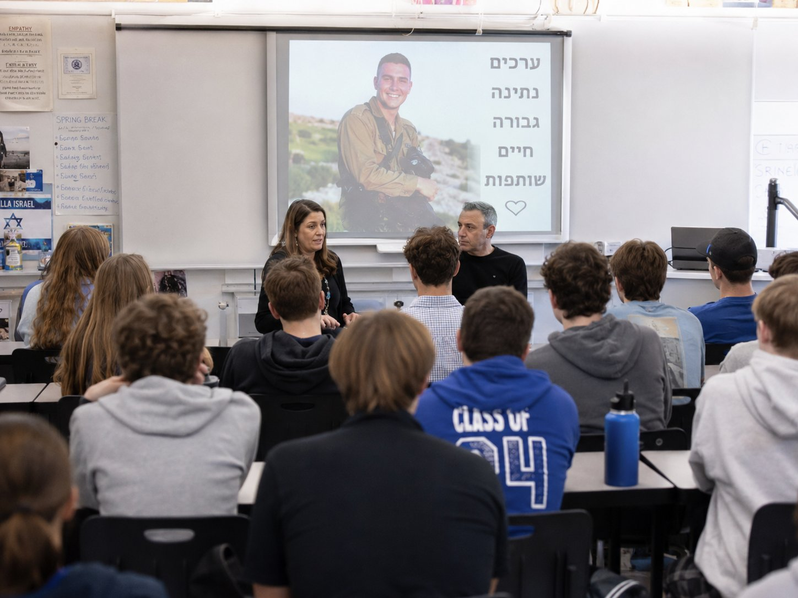

איך זה עובד
מסיפור — למעשה.
הזיכרון הופך חיים.
כל קהילה, בית ספר או ארגון יכול להקים אבן פינה של תיקון חברתי וסולידריות יהודית — דרך מיזם הנצחה אחד, שאותו בוחרים, לומדים, מאמצים ובונים יחד.
השביל בארבעה שלבים
איך זה עובד
שלב 01
בּוֹחֲרִים
הקהילה בוחרת מקרב מיזמי ההנצחה פרויקט הקרוב לליבה.
שלב 02
לוֹמְדִים
מכירים את הדמות, את סיפורה ואת ערכי הגבורה והחוסן שלה.
שלב 03
מְאַמְּצִים
הופכים לשותפים פעילים בהנצחה — בקהילה המקומית או בישראל.
שלב 04
בּוֹנִים
שותפות חינוכית, כלכלית ויזמית — והשביל רק מתחיל.
תפקיד הצד המקשר
מה אנחנו עושים בפועל
שידוך מדויק
מתאימים לכל קהילה מיזם הנצחה הקרוב לליבה, ומחברים אותה אל המשפחה השכולה שמאחוריו.
ליווי לאורך הדרך
מלווים את הקהילה מהמפגש הראשון ועד לשותפות מבוססת — ומתאימים את התהליך לצרכיה.
חומרים חינוכיים
מספקים לקהילה חומרי לימוד והפעלה על הדמות וערכיה, ובונים יחד תהליך למידה משמעותי בתוך הקהילה.
סבסוד וגיוס משאבים
מסבסדים את ביקור הקהילה במיזם, ופועלים לגיוס משאבים להרחבת הפעילות לקהילות רבות.
סיפור של המשכיות
מסיפור — למעשה. הזיכרון הופך חיים.
01 · הסיפור

בכיתה, מעבר לים
הורים שכולים מספרים לתלמידים על בנם שנפל — על ערכיו, גבורתו ונתינתו.
ומשם —
לישראל
לישראל
02 · המעשה
בשטח, בישראל
תלמידים ומתנדבים יוצאים אל השטח — לוקחים חלק פעיל בהרחבת מיזם ההנצחה ובבנייתה של הארץ.
תוצרים של המיזם
מה נשאר אחרי — ומה ממשיך לצמוח
מרחיבים את מעגל הזיכרון של גיבורי האומה
מחזקים את החוסן והזהות היהודית מול אתגרי התקופה
מייצרים שביל אמיתי לעשייה חברתית בישראל
מחנכים ליוזמה, לקיחת אחריות ומעורבות יהודית פעילה
מייצרים שבילים חדשים בין ישראלים לאחיהם בתפוצות
מוכנים לקחת חלק?
בחרו את דרגת המעורבות שמתאימה לקהילה שלכם, או דברו איתנו ונבנה יחד את השביל.